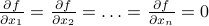

On Intuition and Hessians
There's a bizarre thing that sometimes happens when I'm reading about physics or statistics or other technical subjects. Even if the concept I'm learning is completely fresh and foreign, I sometimes feel an uncanny sense for the ‘‘proper’’ way to approach a concept. But I'm often quite confused where my gut feeling comes from, especially if I've never encountered a topic before!
I attribute this feeling to the magic of intuition. As humans, we often feel a conviction that an idea is right or wrong even without a fully-fleshed-out explanation. Intuition lets us reason logically without any logical reasoning (!), and in my view, an ‘‘intuitive’’ understanding of technical knowledge can be more powerful than the details of particular logical steps.
In my opinion, if we want to apply our intuition to solving problems, we ought to be rather careful about how we build up a intuition so that our gut instincts align well with reality. We also ought to recognize which situations we can trust our intuition in, and which situations we can't.
These days, I find myself thinking carefully about where my intuition comes from. I feel that it's built up from (1) seeing lots of particular examples, (2) distilling the essence into simple language, and (3) reasoning by analogy for new examples. But if we don't want our intuition to run astray, we must refresh and recalibrate our intuition every once in a while by going over specific examples and hashing out the chain of logic. In my opinion, this recalibration process is a moral obligation for anyone who wishes to trust their intuition!
A few days ago, as I was reading some of Jim Sethna's work, I had yet another moment of ‘‘why the hell do I believe this idea even though I've never learned this topic before?’’ And instead of just letting it slide by, I decided to sit down and hash out exactly how my intuition arose. So here I am, fulfilling my moral obligation to calibrate my intuition.
In this post, I will discuss the curvature of multi-dimensional functions. For those of you familiar with the math, I will be talking about the eigenvectors and eigenvalues of (symmetric) quadratic forms. These sorts of concepts arise naturally in physics and in statistics when we want to talk about how high-dimensional functions behave near their minima.
Overview
Why care about high-dimensional functions
Mr. Taylor says quadratic
Ellipses and quadratic forms
The moment of inertia tensor
The covariance matrix and PCA (principal component analysis)
Vibrations around equilibrium
Saddle points in neural networks
Jim Sethna's sloppy models
High-dimensional functions
Many problems in science and engineering have a natural geometric interpretation in terms a multi-dimensional space. Today, I'll be considering two main examples:
motion. Say we have lots of particles – atoms in a protein, molecules in a gas, nuclei in a crystal lattice, etc. – and we want to understand how they move around in time. To specify a particular configuration of the system, we need to know the location of each particle; if there are
 particles, we need to know numbers. (The factor of 3 comes from the x-component, y-component, z-component of each particle). We can think about each configuration as a point in a -dimensional configuration space. (Note that this high-dimensional configuration space is a mathematical trick that has nothing to do with the actual physical space we live in!)
particles, we need to know numbers. (The factor of 3 comes from the x-component, y-component, z-component of each particle). We can think about each configuration as a point in a -dimensional configuration space. (Note that this high-dimensional configuration space is a mathematical trick that has nothing to do with the actual physical space we live in!)training a statistical model. Say we're given a bunch of data, and our task is to pick the ‘‘best’’ parameters for our statistical model. For instance, if we are fitting data to an exponential decay of , our job is to pick the best values of and . The different possible combinations of and live in a 2-dimensional parameter space.
Since we're so familiar with 3D space from our day-to-day lives, the geometric interpretation is a helpful tool for us to reason by analogy. For instance, when a bunch of particles are bouncing around inside a box, we know that the motion is described by a trajectory in configuration space. (Think about it – the configuration is changing continuously over time.) Or when we're trying to pick a good set of parameter values for a statistical model, it's akin to finding the best point in parameter space.
We can often define functions over these spaces. Such functions takes on different values at different points in the space. If we consider a ‘‘mattress’’ of balls and springs – a simple model of the nuclei in a metal, for instance – then each particular configuration of balls has an associated potential energy depending on how squished the springs are. We can thus think of the (potential) energy as a function of configuration space; it takes on a lower value at configurations where the springs are squeezed tightly and a higher value where the springs are loose. (Again, remember that points in configuration space have nothing to the real physical space we live in!). In the example of statistical models, we often think about a loss function the measures how well the model fits the data – sum-of-squared-errors loss, zero-one loss, whatever loss you like. A set of parameters that fits the data poorly results in a high loss; a good set of parameters will give a nice and low loss. In general, the loss function has different values at different places in parameter space.
These functions are rather complicated beasts to tackle, in part because high-dimensional spaces are immensely vast. The number of points in these spaces grows exponentially with the dimension! (think about the formula for length versus area versus volume…) So it gets rather unweildy to characterize the behavior of a function everywhere in a high-dimensional space. Thankfully, we typically (!) don't need to understand the behavior everywhere, because we only care about particularly nice regions of the space. In the example of many-body-physics, we expect that the trajectory will settle down and stay around a minimum of the potential energy surface, in much the same way that a bale of hay will roll to the bottom of a valley. (There are many caveats to this statement that I will ignore for simplicity.) In the example of statistical learning, we only care about the ‘‘best’’ choices of parameters that fit the data well, corresponding to regions of parameter space where the loss function is small. In both of these cases, all we care about is how a function behaves in a region of space around a minimum.
For the rest of this blog post, we will be examining how multi-dimensional functions behave in the neighborhood of a local minimum.
Mr. Taylor
We first review the mathematical language of functions of many variables. The takeaway of this section is that functions look like quadratic forms near their local minima.
One dimension
We begin with a function of a single variable  , and then we will generalize to higher dimensions.
, and then we will generalize to higher dimensions.
Let  be a point on a 1D line, and
be a point on a 1D line, and  be a (smooth) function over the line. We want to study the behavior of in the vicinity of a particular point
be a (smooth) function over the line. We want to study the behavior of in the vicinity of a particular point  . In general, might be a pretty complicated function, but if we zoom into the neighborhood of , we have a better hope of understanding its local behavior.
. In general, might be a pretty complicated function, but if we zoom into the neighborhood of , we have a better hope of understanding its local behavior.
Near this point, we can express as , where is a small displacement. Mr. Taylor tells us that the local behavior around is described by
Each successive term in the approximation gives you a better and better estimate of how behaves near :
To zero'th order,
just takes on a constant value of whatever it is at . But typically isn't a constant, it changes value…To first order,
is a line with slope that passes through at . But in general isn't a line, it curves…To second order,
has a bit of curvature described by a parabola . And so on…
Note that if is a local minimum of , then the first derivative vanishes because the slope is flat. So the Taylor expansion no longer has a linear term; instead, the function looks like
This is the equation of a parabola. If , then the parabola points upwards and the function increases when you walk away from (to leading order); if then it decreases as you walk away from . The greater the magnitude of , the greater the ‘‘steepness’’ of the walls of the parabola.
We now understand the behavior of one-dimensional functions near their minima: they are parabolas. Now let us talk about higher dimensions.
Higher dimensions
In higher dimensions, the notion of a parabola generalizes to a quadratic form. As you may expect, a higher-dimensional function looks like a quadratic form in the vicinity of a local minimum. The reasoning is entirely analogous to the 1D case.
Points in a high-dimensional space can be labeled by . Our function is now defined at every point in the space. Since high-dimensional space is so vast, it is fruitless to understand its behavior everywhere; we instead zoom in around a particular point and study the behavior in the neighborhood of .
Once again, the points near can be described as , where is a small displacement. We want to write a Taylor expansion in , but this time around, it's not immediately obvious how to do so. So let us first understand how to take derivatives in higher dimensions.
The first derivative tells you how much varies when you move by a little . Since there are many possible directions to move in higher dimensions, the amount that changes by depends on which direction you choose to move in. If you move along the  -axis, then the function changes by ; if you move along the -axis, then the function changes by , and so on and so forth. If you move in an arbritrary direction, then you need to add up how much the function changes due to your movement along each particular axis. Thus the first-order approximation can be written as
-axis, then the function changes by ; if you move along the -axis, then the function changes by , and so on and so forth. If you move in an arbritrary direction, then you need to add up how much the function changes due to your movement along each particular axis. Thus the first-order approximation can be written as
where the sum over  is a sum over the different possible basis directions that you can move in the space. (In our physical 3D world, for instance, these three basis directions are up, right, and forward.) The displacement
is a sum over the different possible basis directions that you can move in the space. (In our physical 3D world, for instance, these three basis directions are up, right, and forward.) The displacement  is due to small displacements in each of the directions. The bar with the means to take the value of the derivative at the point .
is due to small displacements in each of the directions. The bar with the means to take the value of the derivative at the point .
Notice that the first-order term is generalization of a line to higher dimensions. In the case of one dimension, the linear correction was . In higher dimensions, since can be a displacement in many possible directions, we have to add up the contribution from each of the directions of , so .
As before, the first derivative vanishes when we're at a local minimum. In fact, the derivative must be zero along all possible directions in order for the function to have a minimum. (If there were a particular direction along which it wasn't zero, then the function would get smaller as you walked along that direction, so it couldn't be a minimum there.) So at a minimum, all the partial derivatives must be zero: .
Since the linear term vanishes at a minimum, we must go to second order. Let us think about how the quadratic term looks like. The second derivative is the derivative of the first derivative. Since the first derivative has  different components (corresponding to each of the basis directions in the space), the second derivative must have different ‘‘components’’ because for each of the components of the first derivative, you can take another derivative in any direction.
different components (corresponding to each of the basis directions in the space), the second derivative must have different ‘‘components’’ because for each of the components of the first derivative, you can take another derivative in any direction.
Thus the shape of the quadratic correction around the minimum of a multi-dimensional function is
This expression is analogous to
in the one-dimensional case.
Off the bat, I have to admit I can't come up with a compelling reason for why the expression takes this form. But it indeed turns out to be the case. In the next section I want to justify why is such a natural object to consider.
What is a quadratic form?
Quadratic forms seem exotic at first, but once we see past the funny notation, we find that they are rather familiar. A few concrete examples of ellipses will help solidify our understanding. As we investigate ellipses more, we will discover if we pick our basis directions to line up with the axes of the ellipse, then their description becomes far simpler. This will be our clue into understanding the eigenvectors and eigenvalues of a quadratic form.
Let us work with a concrete 2D example to see how ellipses arise.
In two dimensions, the displacement can be written as . A typical quadratic form looks like
For niceness let us rename some of the coefficents and write it as
Notice that the terms include all possible ways to multiply pairs of variables together. In this example, since we have and  as our variables, the possible pairs are ,
as our variables, the possible pairs are ,  , and the cross-term . If we added a
, and the cross-term . If we added a  variable as well, then we would have to add a new term, as well as the cross-terms and . And so on and so forth. In general, a quadratic form is just a weighted sum of all the pairs of variables multiplied together.
variable as well, then we would have to add a new term, as well as the cross-terms and . And so on and so forth. In general, a quadratic form is just a weighted sum of all the pairs of variables multiplied together.
Now let us turn to understanding the behavior of the function . There are a few ways to visualize a function of two variables. One way is to graph it as a surface over the x-y plane, where the height of the surface tells you the value of . However, this surface lives in three dimensions, and it is very difficult to think and draw in three dimensions. So rather than trying to visualize this surface in its full three-dimensional glory, we typically slice it horizantally (like a CT scan) and draw the shape of the surface on the slice. The resulting ‘‘level sets’’ let you piece together a contour map of the surface.
The horizantal slices of the surface correspond to …
Thus we must answer the question: What are the shapes of the level sets of a quadratic form?

Go back and forth between index notation, abstract vector notation, and explicit sums to show that all possible pairs of coordinates are added.
Draw ellipses as the level sets.
Question: how to describe the shapes of the ellipse most naturally? How to kill the off-diagonal terms?
Diagonalizing the Hessian
Review of changing bases in linear algebra. Like RGB vs saturation/hue!
We want to find basis where the Hessian is diagonal and easy to think about.
Since partials commute, the Hessian is a symmetric matrix ==> orthorgonal basis of eigenvectors.
The directions of the axes of the ellipses are eigenvectors, and the (squares of) the lengths are the eigenvalues.
Example: the moment of inertia tensor.
Vibrations about equilibrium
With this understanding, the results fall out easily.
Normal modes are the eigenvectors, frequencies are the eigenvalues.
In low-frequency directions, walking a large distance in configuration space doesn't increase the energy by much.
Each mode is the combination of lots of individual degrees of freedom.
Change of basis into normal modes decouples the problem into independent harmonic oscillators.
Principle of superposition: just add up the motion of each part.
Crystals, beer bottles, buildings, marimbas…
Principal Component Analysis
Once again…
High-dimensional Gaussians and the covariance matrix…
Sloppy models
Now apply the same reasoning to the minima of the loss function in parameter-space.
Diagonalize the (Fisher info matrix?) into eigenparameters and eigenvalues.
Each eigenparameter is a combination of different parameters.
Walking in a large distance along ‘‘sloppy’’ directions doesn't penalize the loss too much.
 Back to my home page
Back to my home page